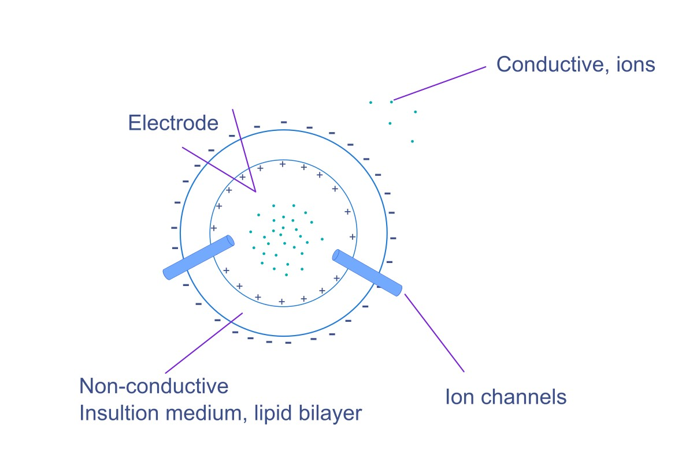
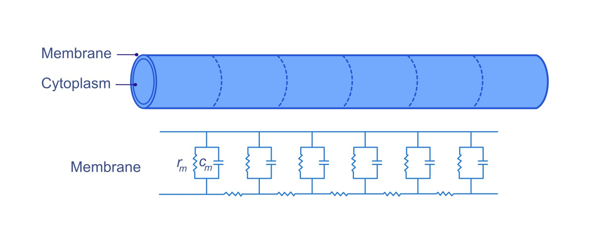

Modul 3 : Sifat Membran Pasif#
Mempelajari sifat membran pasif sebelum memahami potensial aksi diperlukan karena mereka mempengaruhi bagaimana sinyal menyebar dan meluruh sepanjang neuron, menentukan seberapa jauh sinyal dapat berjalan sebelum memerlukan regenerasi.
3.1 Resistansi dan Kapasitansi di membran#
Ada dua sifat elektrik signifikan neuron yang secara signifikan mempengaruhi bagaimana neuron menghasilkan dan mentransmisikan sinyal. Mari kita pahami masing-masing satu per satu.
3.1.1 Resistansi#
Resistansi adalah ukuran seberapa banyak bahan menentang aliran arus elektrik. Dalam konteks neuron, ini mengacu pada seberapa sulit ion mengalir di seluruh membran.
Jenis Resistansi di Neuron :#
1. Resistansi Membran (Rm)#
Resistansi membran mengacu pada resistansi terhadap aliran ion di seluruh membran neuronal. Ini menentukan seberapa mudah ion dapat melintasi membran ketika saluran ion terbuka.
Faktor yang mempengaruhi resistansi membran:
Saluran Ion: Kehadiran dan kepadatan saluran ion secara langsung mempengaruhi resistansi membran. Lebih banyak saluran menghasilkan resistansi lebih rendah karena mereka memberikan jalur tambahan untuk ion mengalir.
Komposisi Membran: Struktur bilayer lipid dan jenis protein yang tertanam di membran mempengaruhi resistansi keseluruhan. Membran yang lebih tebal akan memiliki resistansi lebih tinggi.
Note
Resistansi membran tinggi membantu mempertahankan potensial istirahat membran dengan meminimalkan aliran ion di seluruhnya.

2. Resistansi Aksial (Ri)#
Resistansi aksial mengacu pada resistansi terhadap aliran arus elektrik sepanjang panjang akson atau dendrit neuron. Ini dipengaruhi oleh sifat internal sitoplasma dan dimensi akson atau dendrit neuron.
Faktor yang mempengaruhi resistansi aksial:
Konduktivitas Sitoplasma: Konsentrasi ion dan bahan konduktif lainnya di sitoplasma mempengaruhi resistansi aksial. Konsentrasi ion konduktif yang lebih tinggi mengarah ke resistansi aksial rendah.
Diameter Neuron: Akson diameter lebih besar memiliki resistansi aksial lebih rendah karena area penampang yang lebih besar memungkinkan aliran ion lebih mudah. Inilah sebabnya akson yang lebih besar dapat menghantarkan sinyal lebih cepat.

Note
Resistansi aksial mempengaruhi seberapa jauh sinyal dapat berjalan sepanjang akson tanpa kehilangan potensial signifikan. Resistansi aksial lebih rendah memungkinkan sinyal berjalan lebih jauh dan lebih cepat.
KONDUKTANSI: (Bagian info tambahan)
Ini adalah kemudahan di mana arus elektrik dapat mengalir melalui membran. Dalam konteks neuron, ini mengacu pada kemudahan di mana ion dapat bergerak di seluruh membran neuronal, yang berarti konduktansi lebih tinggi menunjukkan resistansi lebih rendah, memungkinkan lintasan sinyal elektrik melalui neuron lebih mudah.
3.1.2 Kapasitansi:#
Kapasitansi adalah kemampuan sistem untuk menyimpan muatan elektrik. [1]
Di neuron, Kapasitansi membran (Cm) dapat dijelaskan sebagai kapasitas membran neuronal untuk menyimpan muatan, yang penting untuk menciptakan dan mempertahankan potensial membran.
Faktor yang Mempengaruhi Kapasitansi Membran:#
Luas Permukaan: Luas permukaan yang lebih besar meningkatkan kapasitansi, memungkinkan membran menyimpan lebih banyak muatan.
Ketebalan Membran: Membran yang lebih tipis umumnya memiliki kapasitansi lebih tinggi karena jarak antara muatan lebih kecil.
Peran dalam Potensial Membran#
Kapasitansi mempengaruhi seberapa cepat neuron dapat merespons perubahan tegangan. Ketika arus diterapkan, kapasitansi membran menentukan seberapa cepat potensial membran berubah. Kapasitansi tinggi berarti membran dapat menahan lebih banyak muatan, menghasilkan tingkat perubahan potensial lebih lambat, sementara kapasitansi rendah memungkinkan perubahan cepat.
3.2 Konstanta Panjang dan Waktu#
Interaksi antara resistansi dan kapasitansi secara signifikan mempengaruhi bagaimana neuron memproses dan mentransmisikan sinyal.
Konstanta Waktu (τ)#
Konstanta waktu didefinisikan sebagai produk resistansi dan kapasitansi. Ini menunjukkan seberapa cepat potensial membran dapat berubah sebagai respons terhadap stimulus. Konstanta waktu yang lebih panjang berarti neuron membutuhkan waktu lebih lama untuk merespons, sementara konstanta waktu yang lebih pendek memungkinkan perubahan cepat.
Konstanta Panjang (λ)#
Ini mengukur seberapa jauh sinyal elektrik dapat berjalan sepanjang akson sebelum meluruh secara signifikan. Ini dipengaruhi oleh resistansi aksial dan resistansi membran. Konstanta panjang yang lebih tinggi memungkinkan sinyal berjalan lebih jauh.
3.3 Ringkasan#
Dalam modul ini, kita belajar bagaimana sifat elektrik pasif neuron mempengaruhi penyebaran sinyal sepanjang membran. Kita mempelajari dua fitur utama: Resistansi membran (Rm) dan resistansi aksial (Ri), yang menentukan seberapa mudah ion mengalir di seluruh membran dan sepanjang neuron. Kapasitansi membran (Cm), yang menjelaskan berapa banyak muatan yang dapat disimpan membran dan seberapa cepat tegangan dapat berubah. Kita juga belajar dua parameter penting:
Konstanta waktu(τ) - menentukan seberapa cepat potensial membran merespons stimulus.
Konstanta panjang(λ) - menentukan seberapa jauh sinyal dapat berjalan sebelum meluruh.
Bersama-sama, sifat pasif ini menjelaskan mengapa beberapa sinyal melemah seiring jarak dan mengapa neuron memerlukan mekanisme aktif untuk meregenerasi sinyal. Ini menetapkan panggung untuk modul berikutnya tentang Potensial Aksi (Modul 4), di mana kita mempelajari bagaimana neuron menghasilkan lonjakan elektrik penuh untuk mengatasi peluruhan pasif.